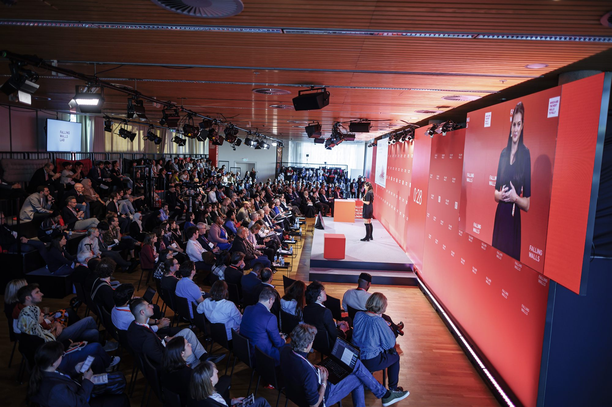

Política de cookies
Esta web no usa cookies de analítica ni de publicidad. Solo guarda en tu navegador lo imprescindible para funcionar, y pide tu permiso antes de cargar contenido externo.
Qué guardamos
| Nombre | Tipo | Para qué | Duración |
|---|---|---|---|
| fwl-consent | Técnica (almacenamiento local) | Recordar tu elección sobre cookies | 12 meses |
Contenido externo (requiere tu permiso)
| Servicio | Para qué | Cuándo |
|---|---|---|
| YouTube (modo de privacidad mejorada, youtube-nocookie.com) | Ver los vídeos de ediciones anteriores | Solo si aceptas «Contenido externo» o pulsas «Sí, esta vez» |
Recursos propios
Las tipografías (Barlow, licencia SIL Open Font License) y las librerías del mapa se sirven desde este mismo servidor. No se conecta con Google ni con otras redes de distribución de contenido.
Cambiar tu elección
Puedes cambiar o retirar tu consentimiento cuando quieras:
También puedes borrar los datos guardados desde la configuración de tu navegador.
Última actualización: noviembre de 2026.